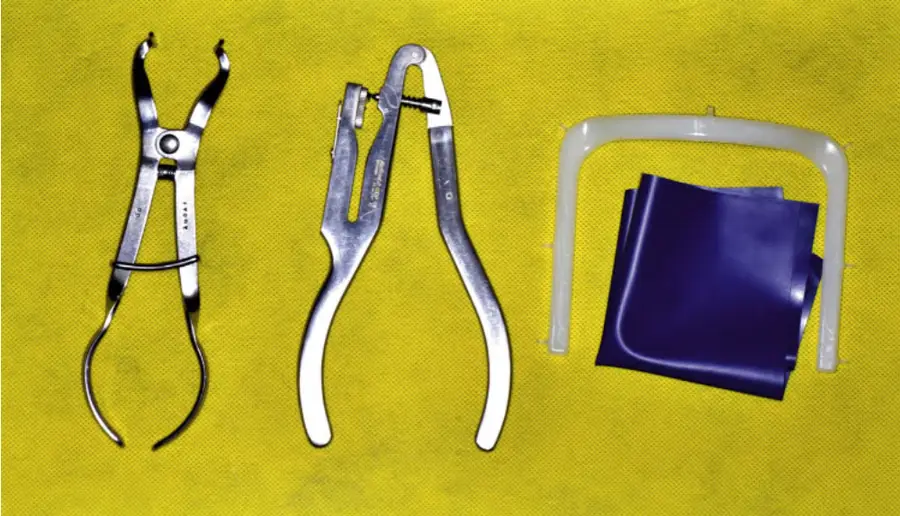
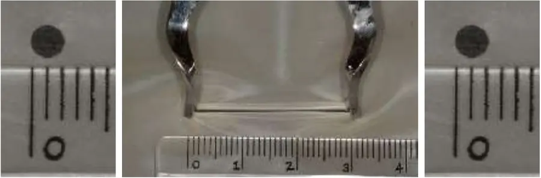

نسخه استخراجشده؛ ترجمه یا تأیید علمی انجام نشده است. وضعیت: captured
روز اول بخش ترمیمی است. کیت رابردم جلوی توست: یک ورق، یک پانچ، چند کلمپ، یک فورسپس، یک فریم و یک بسته نخ دندان. بیمار برای ترمیم مولر اول پایین آمده است. هر کدام از اینها را برای چه برمیداری؟

کیت رابردم چهار جزء اصلی دارد و چند وسیلهی کمکی. اگر کار هر جزء را بدانی، وسط کار دنبال چیزی نمیگردی.
پیش از گذاشتن رابردم، نخ دندان را از همهی تماسها رد کن. اگر نخ ریشریش شد، لبهی تیز ترمیم یا مینا را صاف کن؛ وگرنه ورق همانجا پاره میشود.
لاتکس دو ویژگی کلیدی دارد: کشسانی (کشیده میشود و پاره نمیشود) و برگشتپذیری (به شکل اولش برمیگردد). سوراخ ورق همیشه از دندان کوچکتر است. کشسانی اجازه میدهد سوراخ از تاج رد شود و برگشتپذیری آن را دور گردن دندان تنگ میکند؛ سیل از همینجا میآید. بزرگترین سوراخ پانچ حدود ۲٫۳ میلیمتر است و تا حدود ۳ سانتیمتر باز میشود بیآنکه پاره شود.

دو دیدگاه رایج: برای ترمیم ورق تیره (کنتراست بهتر، خستگی کمتر چشم)؛ در درمان ریشه برخی ورق روشن را برای روشنی میدان و رادیوگرافی ترجیح میدهند. هر دو قابل قبول است. ورق عاجیرنگ برای ترمیم مناسب نیست. رنگ دندان را پیش از رابردم انتخاب کن، چون دندان زیر رابردم خشک و روشنتر میشود. سمت مات ورق رو به اکلوزال است.
اشتباه رایج: ورق کهنه شکننده است و وسط کار پاره میشود. پیش از شروع، ورق را میان انگشتها بکش؛ ورق سالم بهسختی پاره میشود. گرما ورق را زودتر پیر میکند؛ جعبهها را جای خنک بگذار.